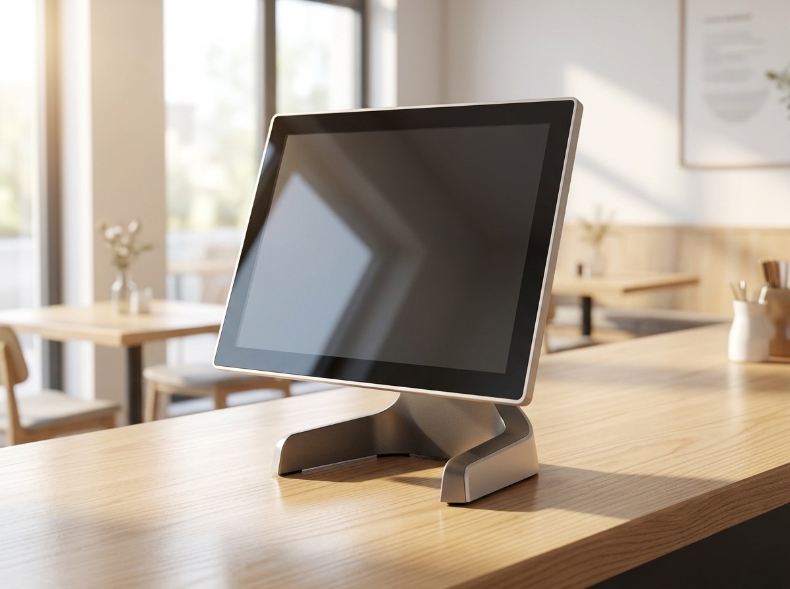

새출발기금 채무조정, 대상·지원 내용부터 신청 효과까지 한눈에 정리했습니다
빚 부담으로 힘든 소상공인·자영업자라면 정부의 새출발기금(newstartfund.or.kr) 채무조정 제도를 먼저 확인해 보시기 바랍니다. 새출발기금은 코로나19 시기를 포함해 경영 여건이 어려워진 소상공인·자영업자의 채무를 조정해 재기를 돕는 정부 프로그램입니다. 상환기간을 늘리고, 조건에 따라 원금과 금리를 조정하며, 신청 즉시 추심이 중단되는 것이 핵심입니다. 다만 자격 여부와 원금 조정 비율은 개인별로 크게 다르므로, 아래 내용은 제도 이해를 위한 안내로만 참고하시고 정확한 자격과 조건은 반드시 새출발기금 공식 사이트나 상담센터(1660-1378)로 직접 확인하셔야 합니다.
새출발기금은 누구를 위한 제도인가
새출발기금은 2020년 4월부터 2025년 6월 사이에 사업을 영위한 개인 또는 법인 소상공인·자영업자를 대상으로 합니다. 지원 대상은 크게 두 부류로 나뉩니다.
- 부실차주: 3개월 이상 장기 연체 상태인 경우
- 부실우려차주: 아직 연체는 아니지만 연체 위험이 큰 경우
즉 이미 연체 중인 사장님뿐 아니라, 아직 버티고는 있지만 상환이 벅찬 사장님도 대상이 될 수 있습니다. 다만 본인이 어느 유형에 해당하는지, 신청 가능한지는 스스로 단정하기 어렵습니다. 애매하다고 느껴진다면 넘겨짚지 말고 공식 상담을 통해 확인하는 것이 가장 정확합니다.
어떤 지원을 받을 수 있나
새출발기금의 지원은 상환 부담을 실질적으로 낮추는 데 초점이 맞춰져 있습니다. 아래 표는 제도에서 안내하는 주요 지원 내용을 정리한 것입니다. 실제 적용되는 조건은 개인별 심사 결과에 따라 달라질 수 있습니다.
| 구분 | 지원 내용 |
|---|---|
| 상환기간 | 최대 3년 거치 후 최장 20년 분할상환 |
| 원금 조정 | 상환 능력에 따라 0~80% 조정(취약계층은 최대 90%) |
| 금리 | 상환 부담을 낮추는 방향으로 조정 |
| 조정 한도 | 최대 15억 원(담보 10억 + 무담보 5억) |
여기서 중요한 점은 원금 조정 비율이 '누구나 최대'가 아니라 상환 능력 심사에 따라 정해진다는 것입니다. 표에 적힌 수치는 제도상 범위일 뿐이며, 본인에게 적용될 실제 조건은 새출발기금 심사와 상담을 통해서만 확정됩니다.
신청하면 바로 달라지는 것
새출발기금 신청의 큰 장점 중 하나는 신청 즉시(익일부터) 채권 추심이 중단되고 강제집행이 중지된다는 점입니다. 매일 걸려 오는 독촉 연락과 압류 걱정에 시달리던 사장님이라면, 이 조치만으로도 숨 돌릴 여유를 확보할 수 있습니다. 채무 문제는 혼자 끌어안고 있을수록 선택지가 줄어드는 경우가 많습니다. 제도가 있다는 것을 아는 것만으로도 대응의 폭이 넓어집니다.

신청 방법과 반드시 확인할 것
새출발기금은 공식 사이트 newstartfund.or.kr을 통해 안내와 신청 절차를 확인할 수 있으며, 전화 문의는 1660-1378(평일 09~18시) 로 가능합니다. 다시 한번 강조하자면, 앞서 소개한 대상 기준·원금 조정률·상환 조건은 모두 개인 상황에 따라 달라지는 항목입니다. 인터넷의 요약 정보나 지인의 경험담만 믿고 판단하기보다는, 반드시 공식 창구에서 본인의 자격과 조건을 확인하시기 바랍니다. 특히 조정률이나 한도를 단정적으로 약속하는 비공식 대행 업체는 주의가 필요합니다.
재기하는 매장, 결제 인프라 부담은 이렇게 줄입니다
채무를 조정하고 다시 영업을 시작하는 사장님에게는 초기 고정비를 한 푼이라도 줄이는 것이 중요합니다. 매장 운영에 꼭 필요한 포스, 카드결제 단말기, 키오스크, 테이블오더 같은 결제 인프라도 부담이 될 수 있는 부분입니다.
누리네트웍스는 수도권 지역의 POS·결제단말·키오스크·테이블오더 대리점으로, 정품 장비를 직접 공급가로 안내해 재영업 매장의 초기 부담을 낮추는 데 도움을 드리고 있습니다. 어떤 장비가 우리 매장에 맞는지, 무엇부터 갖추면 되는지 막막하다면 부담 없이 상담을 요청해 보셔도 좋습니다. 결제 환경을 깔끔하게 정비하는 것도 재기의 든든한 출발점이 됩니다.

자주 묻는 질문(FAQ)
Q. 아직 연체는 아닌데 새출발기금 대상이 될 수 있나요?
A. 연체 전이라도 연체 위험이 큰 '부실우려차주'는 대상에 포함될 수 있습니다. 다만 실제 해당 여부는 개인 상황에 따라 다르므로, 새출발기금 공식 사이트(newstartfund.or.kr)나 상담센터(1660-1378)에서 반드시 직접 확인하시기 바랍니다.
Q. 원금은 얼마나 줄어드나요?
A. 제도상 원금은 상환 능력에 따라 0~80%(취약계층은 최대 90%) 범위에서 조정될 수 있습니다. 그러나 실제 적용 비율은 심사 결과에 따라 개인별로 달라지므로 미리 단정할 수 없습니다. 정확한 조건은 공식 상담을 통해 확인하셔야 합니다.
Q. 신청하면 추심이 정말 멈추나요?
A. 새출발기금 안내에 따르면 신청 즉시(익일부터) 추심이 중단되고 강제집행이 중지됩니다. 세부 적용 시점과 조건은 신청 과정에서 공식 창구를 통해 확인하시는 것이 정확합니다.
Q. 재영업을 준비 중인데 결제 장비는 누구와 상담하면 되나요?
A. 포스·카드단말기·키오스크·테이블오더 등 매장 결제 인프라는 누리네트웍스로 문의하시면 정품 장비를 직접 공급가 기준으로 안내받으실 수 있습니다. 전화 1544-7754 또는 홈페이지 nwpos.co.kr로 편하게 연락 주세요.
채무 조정으로 한숨 돌리셨다면, 다시 시작하는 매장의 결제 환경도 부담 없이 정비해 보세요. 누리네트웍스가 함께합니다.
- 📞 전화상담 1544-7754
- 🌐 홈페이지 nwpos.co.kr